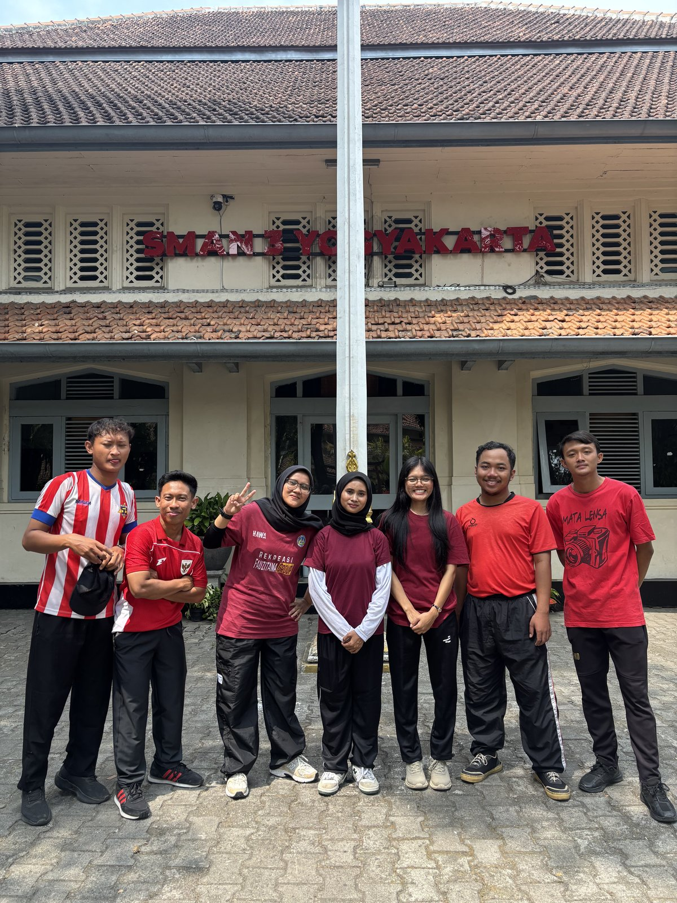
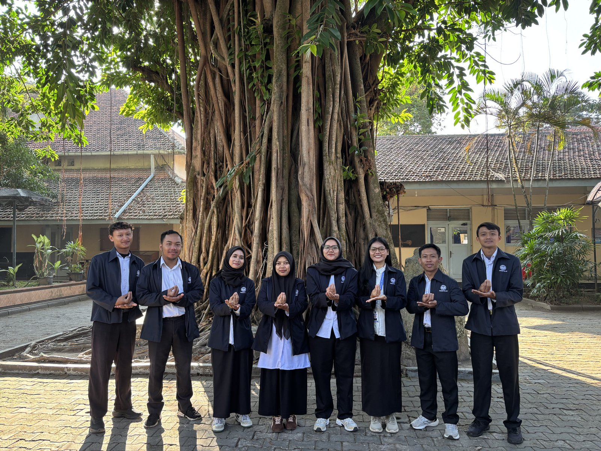

Foto Tim Mahasiswa PPL PJOK di SMA N 3 Yogyakarta
Krisna Pratama bersama rekan mahasiswa PPL mengenakan kaos olahraga seusai praktik lapangan di depan gedung induk cagar budaya.

Foto Bersama Almamater di Pohon Beringin Ikonik
Seluruh mahasiswa PPL PPG Calon Guru berjas almamater resmi UNY mengabadikan momentum kebersamaan di bawah pohon beringin bersejarah.

Bimbingan & Refleksi Bersama Guru Pamong PJOK
Diskusi telaah modul ajar, perbaikan sintaks diferensiasi di lapangan, dan penguatan kompetensi pedagogik calon guru PJOK.

Supervisi Klinis & Monitoring Kunjungan DPL UNY
Monitoring pelaksanaan PPL Terbimbing oleh Dosen Pembimbing Lapangan FIKK UNY bersama mahasiswa praktikan dan jajaran guru PJOK.

Piket Pembiasaan Budaya 3S (Senyum, Salam, Sapa)
Menyambut kedatangan siswa di lobi sekolah dengan jabat tangan santun dan senyum ramah mengawali hari belajar.

Piket Penyambutan Siswa Berbusana Adat Tradisional
Bertugas di pintu gerbang utama menyambut siswa berbusana surjan dan jarik batik, melestarikan budaya adiluhung Yogyakarta.